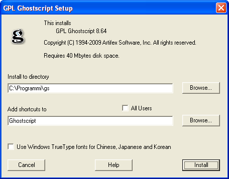
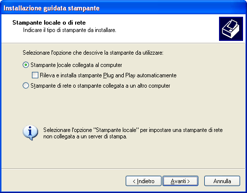
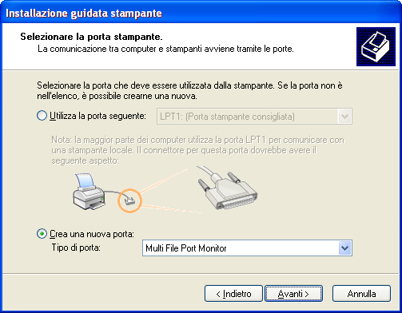
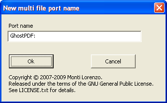
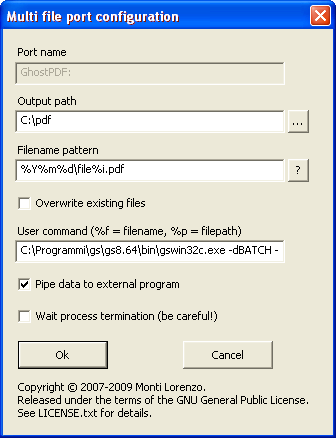
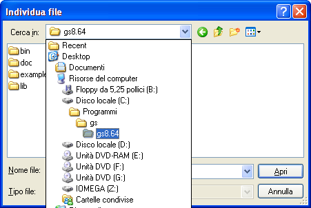
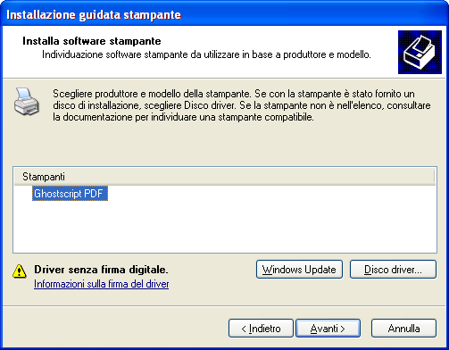
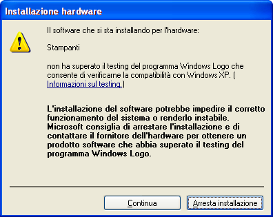
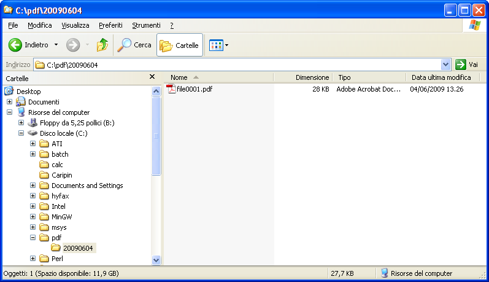

HOW TO SETUP A PDF PRINTER FOR WINDOWS
WITH AUTOMATICALLY CHOSEN FILENAME
by Lorenzo Monti (2009)
http://www.lorenzomonti.it/
1. Introduction
Two years ago, I received a request by
a customer of mine, asking for a program able to create PDFs out of the
invoices from his ERP. We had a batch procedure for invoice printing
and a proprietary PDF printer driver. The only way to go was to connect
the PDF driver to the FILE: port, but then the user would have been
forced to input a name for each file. We were talking about hundreds
of files at a time. After some investigating, I decided to solve this
problem writing a port monitor able to decide the file name for me. I
named it Mfilemon (Multi File Port Monitor) and gave it to the public
domain, under the GPL license.
This document will guide you through
the process of creating a PDF
printer for Windows with the ability to automatically choose the output
filename, using only free software. This can be useful for "batch
printing", for example to produce PDFs out of an ERP's batch print
procedure, or in
any circumstances where an "ask for filename dialog" would be
uncomfortable or even unfeasible.
2.
What's needed
Once you have downloaded the required software, follow the instructions
given below.
3.
Install
Ghostscript
You will need to install Ghostscript.
Please keep in mind where you install it to, since we'll
require it later.

In our example Ghostscript will be placed in C:\Programmi\gs.
4.
Install Multi File Port Monitor (Mfilemon)
Now install Mfilemon. There is nothing to choose during installation,
except the language (english or italian).
5.
Install PostScript printer and create the port
Once Ghostscript and Mfilemon are installed, we are ready to put them
all together.
Go to control panel, printers. Choose Add printer, click Next.
When you're asked for local or network printer, choose "Local printer"
and leave the Plug and Play checkbox blank:

Click Next. We must create and configure the port for this printer.
Choose "Create a new port", and from the drop down list choose "Multi
File Port Monitor":

Click Next. You are asked for the name of the port:

Let's call it "GhostPDF:", following the Windows tradition of appending
a colon to printer port names. You can give it the name of your choice,
though. Click Ok.
The configuration dialog for the newly created port is shown. Let's
fill it:

Here is an explanation of the various
parameters:
- Output path : the directory
where PDF files will be placed.
- Filename pattern : a pattern
made up of various "fields". The filename will be chosen in accordance
to this pattern.
A pattern can also include subdirectories, wich will be created "on the
fly" as needed.
In our example, we are instructing Mfilemon to create a folder named
after the current year, month and day (eg. 20090604), then to choose a
filename composed by the word "file", an integer of four digits ("%i"),
and the suffix ".pdf" (eg. file0001.pdf). The %i field will grow each
time, to ensure uniqueness of the filename (unless you choose to
overwrite existing files, as explained next). If you want to explore
other fields, click on the "?" button.
- Overwrite existing files :
whether an existing file can be overwritten, or a
new name must be produced according to the pattern.
- User command : an user defined
executable that can be invoked to process data from the printer driver.
In our example, the command line is:
C:\Programmi\gs\gs8.64\bin\gswin32c.exe -dBATCH -dSAFER
-dNOPAUSE
-sDEVICE=pdfwrite -dPDFSETTINGS=/prepress -dAutoRotatePages=/PageByPage
-r600 -sOutputFile="%f" -
Obviously, the full path to gswin32c.exe depends on the directory where
Ghostscript was installed to, in step 3.
Here we are invoking the console Ghostscript interpreter, telling it to
write PDF (-sDEVICE=pdfwrite) to the file chosen by Mfilemon
(-sOutputFile="%f") reading its source from standard input (the final
dash).
- Pipe data to external program
: if checked, data coming from the printer driver is sent
to the "User command" through stdandard input. Else, data is spooled to
the file
first, and the "User command" is invoked afterwards.
In our example, this flag must be true since we instructed Ghostscript
to read its source from standard input.
- Wait process termination : if
checked, the spooler is forced to wait for
"User command" to exit. Be careful, since long running user commands
will slow down the spooling process.
Click Ok. The "Add printer" wizard shows a list of printer models:

Click on "Have disk", then "Browse", then go to the directory where
Ghostscript was installed:

Enter the "lib" subdirectory, choose the file "ghostpdf.inf" and click
Open, then Ok.
The following dialog appears, telling us that the file we choosed
provides a printer named "Ghostscript PDF":

Choose the only available printer and click Next.
The wizard asks for a name for the printer (let's call it "Ghostscript
PDF", "Auto PDF" or whatever name you like), whether it should be the
default printer or not, and so on.
These tasks are common to all printers, so if you ever
installed one on your system you don't need step by step
instructions to finish this task. Only one note: during the copy of the
driver files, Windows could complain about the missing "Windows Logo"
certification:

Obviously, tell it to continue.
We are ready to test our PDF printer!
Open your favourite program, then print something to your newly created
printer.
Go to My Computer, browse to C:\pdf. As you can see, Mfilemon has
created a subdirectory (in my case, 20090604, that is today), and
inside it Ghostscript has produced file0001.pdf:

Print something else and see what happens.
Have fun!
aug 04, 2009
A further enhancement is the introduction of the so called "search
fields" (rel 1.3.3 of MFILEMON).
The goal is to benefit from the ability of Ghostscript to generate
multiple "single page files" out of a single "multi page input", when
the output format does not support multiple pages.
For example, you could want to print a multi-page document to several
JPEG files, one per page, named as follows:
file0001-page1.jpg
file0001-page2.jpg
file0001-page3.jpg
file0002-page1.jpg
file0002-page2.jpg
and so on.
Ghostscript has a special syntax for this purpose: the use (surprise!)
of special tags in the filename, which will be substituted at runtime.
The tag %d will become the page number.
So, MFILEMON has to generate a filename, let's say,
"file0001-page%d.jpg", and pass it to Ghostscript, which in turn will
substitute %d with "1", "2", "3", and so on.
And here comes the complexity.
Since a file named exactly "file0001-page%d.jpg" will never exist on disk
due to the Ghostscript tag manipulation, MFILEMON will always choose this
file name, considering it available, and overwriting any existing file
with that name.
We need a mechanism to tell MFILEMON:
- search for files whose name is like
file0001-page*.jpg; if you find any, keep trying with the next number:
file0002-page*.jpg, file0003-page*.jpg, and so on, until you find one
that is available;
- then,
generate a filename for Ghostscript, including the special tag %d.
The syntax for declaring a "search field" is:
|literal|searchstring|
where literal is interpreted "as is", without
substitution done by
MFILEMON, and searchstring is the string used
for the search of the
next available filename. Obviously, searchstring
can contain wildcards.
An example will clarify.
Let's say we want to print each page of our documents to JPEG
files.
We configure MFILEMON as follows:
User command = C:\Programmi\gs\gs8.64\bin\gswin32c.exe
-dBATCH -dSAFER
-dNOPAUSE
-sDEVICE=jpeg -dJPEGQ=85 -r200 -sOutputFile="%f" -
Filename pattern = file%i-page|%d|*|.jpg
We are telling MFILEMON: use * during search, and %d when it comes to produce the output.
Let's say we have a three-pages document and print it.
This will produce:
file0001-page1.jpg
file0001-page2.jpg
file0001-page3.jpg
Now suppose we have another two-pages document and print it.
MFILEMON will start from %i=0001, and search for a file whose name is like file0001-page*.jpg (using the searchstring).
It will find three files, and proceed with the next number: 0002.
Since
it won't find anything matching the name
file0002-page*.jpg, it will stop searching and produce the
filename using the literal.
Thus, the filename chosen by MFILEMON will be file0002-page%d.jpg, which Ghostscript, in turn, will translate to
file0002-page1.jpg
file0002-page2.jpg
That's all!
Copyright © 2009
Monti Lorenzo.